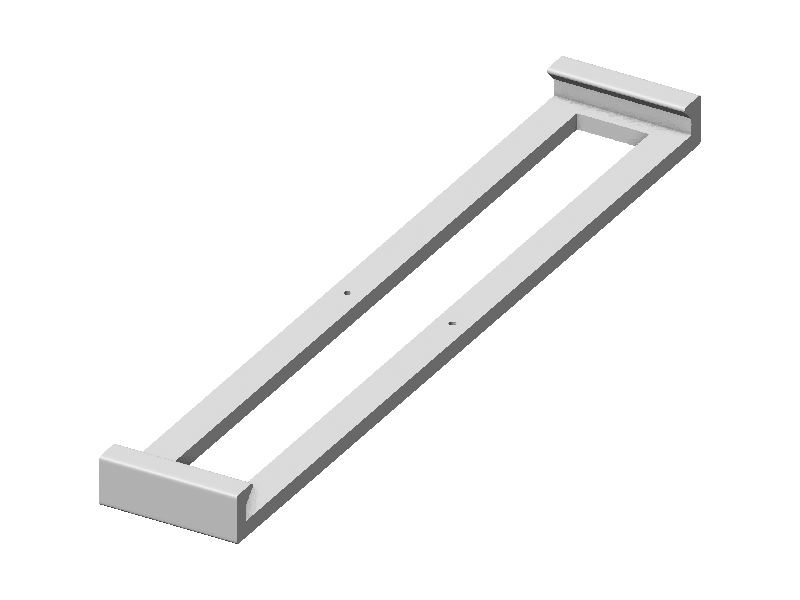

accelerometer-holder
Drafted with AI, not yet reviewed
by Reiprinter/accelerometer-holder.scad
sdf-native the clip is an outline of the original's numbers, rounded and extruded
Accelerometer holder for a printer bed: a clip that hooks over both edges of the bed, with heat-set inserts for the sensor board.
Ported from src/printer/accelerometer-holder.scad. The clip’s cross-section is a polygon with its convex corners rounded (OpenSCAD’s offset(1) offset(-1)), extruded and turned into place.
- Compared with the original: no.

Files
Source
// Accelerometer holder for a printer bed: a clip that hooks over both edges // of the bed, with heat-set inserts for the sensor board. // // Ported from src/printer/accelerometer-holder.scad. The clip's // cross-section is a polygon with its convex corners rounded (OpenSCAD's // offset(1) offset(-1)), extruded and turned into place. // idiom sdf-native: the clip is an outline of the original's numbers, rounded and extruded // --- Parameters --- const BED_LENGTH = 235.0; const BED_THICKNESS = 5.0; const HOLES_DX = 32.0; // spacing of the sensor board's mounting holes const T = 5.0; // wall thickness // --- Clip --- // Cross-section in the XY plane: the top bar along X, hooks at both ends // reaching around the bed's edges (Y runs downwards into the bed). Drawn // as its +X half, the bar reaching past the axis, and mirrored. let l = BED_LENGTH / 2; let profile = rounded_polygon([ [l + T, 0], [l + T, -T - BED_THICKNESS - T], [l - T, -T - BED_THICKNESS - T], [l, -T - BED_THICKNESS], [l, -T], [-T, -T], [-T, 0], ], 1, #{concave: 0}).symmetric_x(); // OpenSCAD's rotate([-90, 0, 90]): the profile's X becomes Y, its Y becomes // -Z and the extrusion runs along X, so the bar lies on z = 0 to 5. let clip = profile.extrude(HOLES_DX + 2 * T).rotate_xyz([-90, 0, 90]); // --- Cuts --- // M2 inserts pressed in from the bottom face, 3 mm deep, with the screw's // hole through the rest. let mount = union( insert_hole("M2", 3).reflect_z(), cylinder(1, 4 * T), ); let mounts = mount.linear_array([HOLES_DX, 0], 2, #{center: true}); // A window through the bar between the mounts. let window = cuboid([HOLES_DX - 2 * T, BED_LENGTH - 2 * T, 3 * T]); draw(clip.difference(union(mounts, window)));